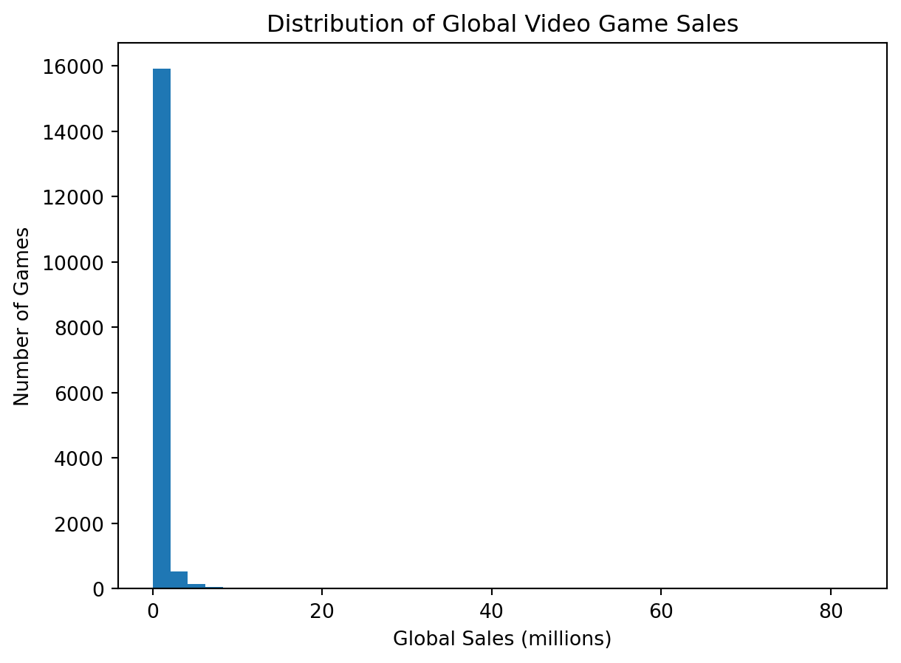
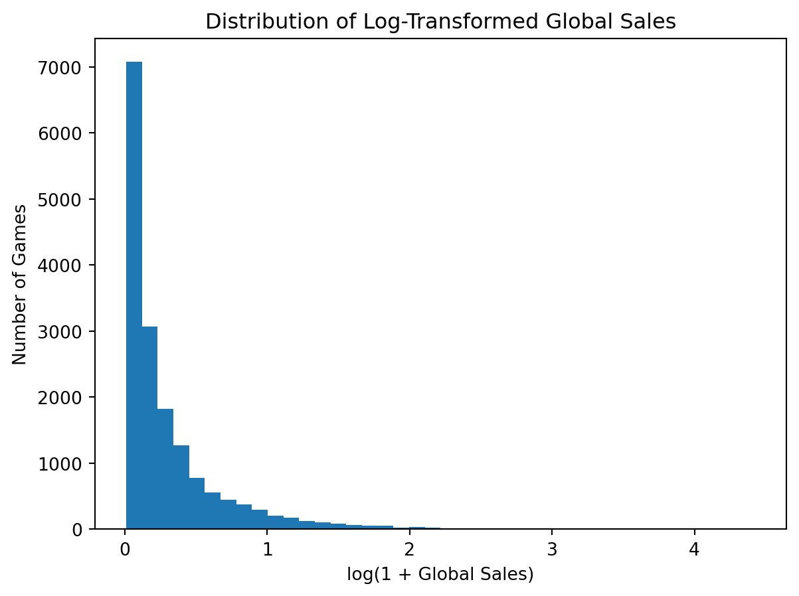
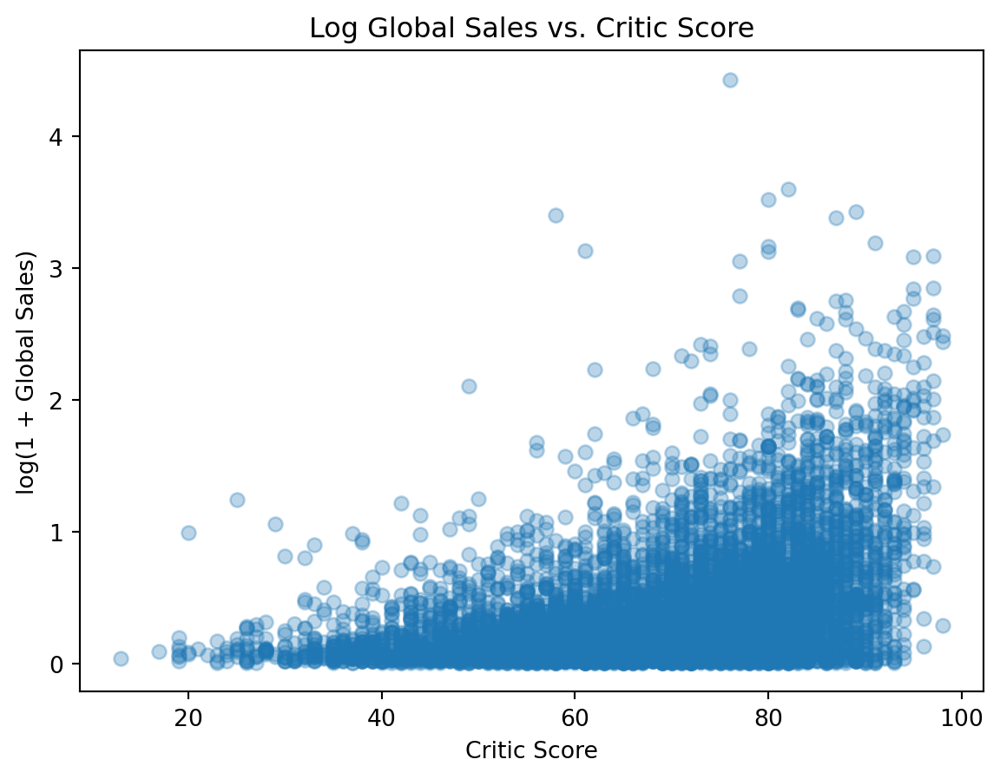
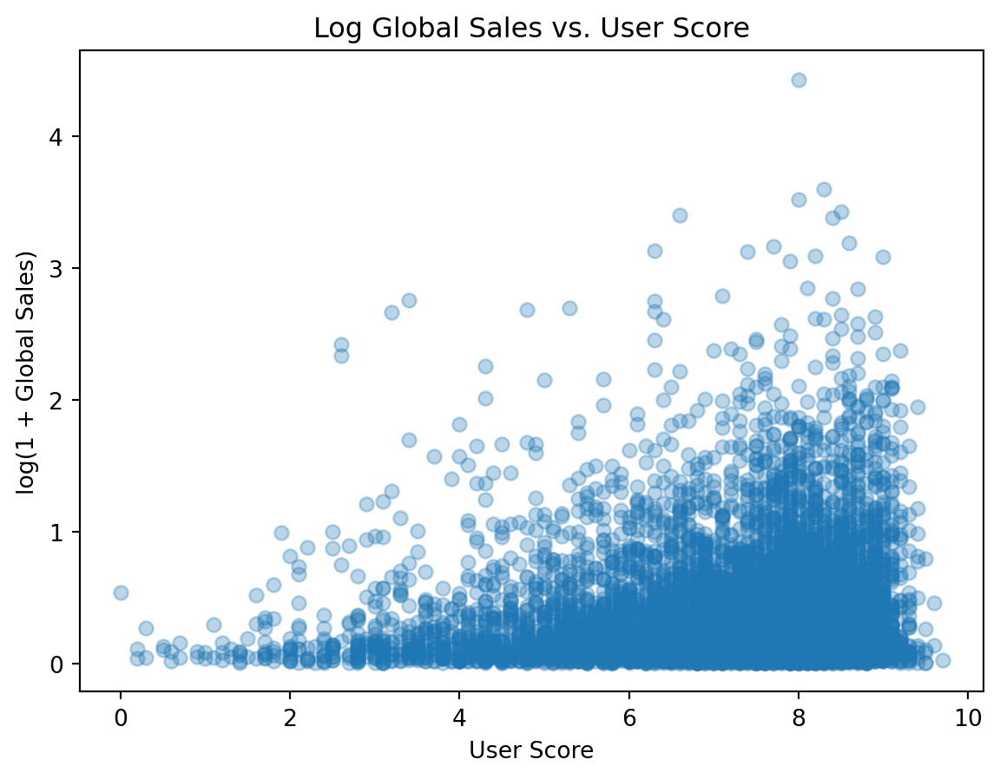
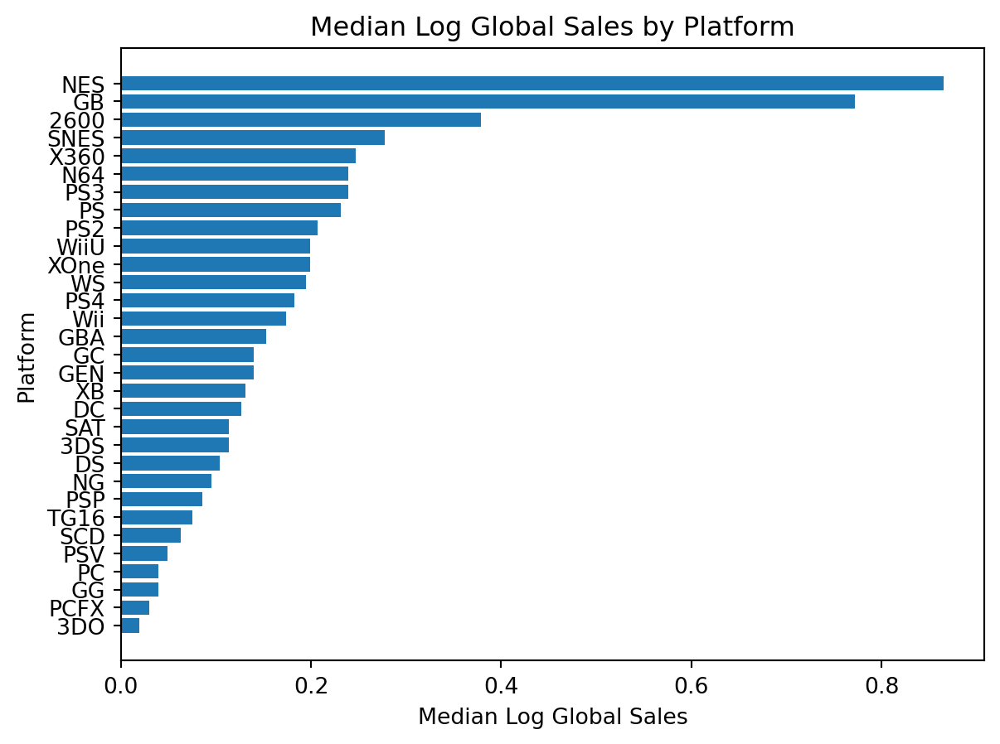
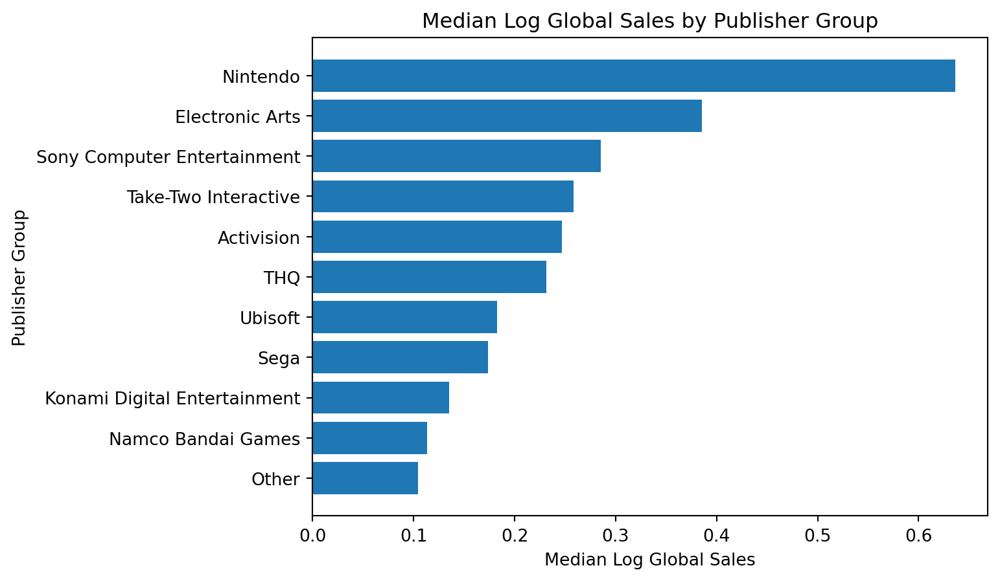
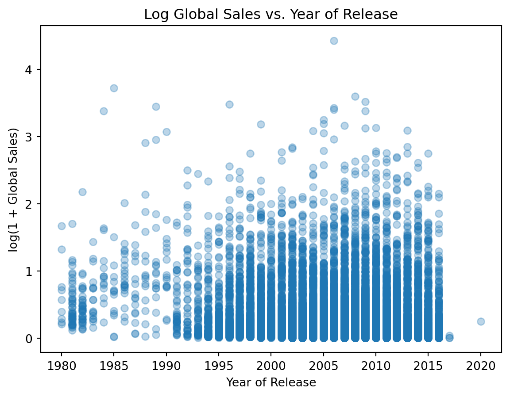
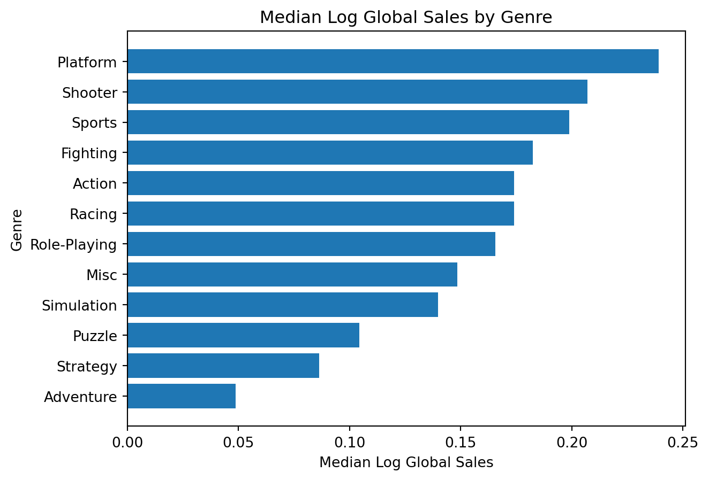

This project uses the Video Game Sales with Ratings dataset from Kaggle, which combines video game release information, sales data, and review scores. Each row represents a video game. The goal of this analysis is to predict a game’s global sales using non-sales features such as release year, review scores, genre, platform, and publisher group.
The dataset includes several sales variables, release details, and review information. I intentionally excluded the regional sales variables because global sales are calculated from regional sales.
Blank values and "tbd" user scores were converted to missing values so they could be handled consistently. I also grouped publishers outside the top 10 into an "Other" category. This keeps the feature space smaller and makes the publisher variable easier to interpret.
The missing-value summary shows that review scores are missing for many games. Instead of dropping every game with a missing predictor, I keep those rows and handle missing values inside the preprocessing pipeline.
Exploratory Data Analysis
I started by examining the response variable. Before choosing a model, it is important to understand whether or not global sales are roughly symmetric.
Code
plt.figure(figsize=(7, 5))plt.hist(games["Global_Sales"], bins=40)plt.xlabel("Global Sales (millions)")plt.ylabel("Number of Games")plt.title("Distribution of Global Video Game Sales")plt.show()

Global sales are heavily right-skewed. Most games sell relatively few copies, while a small number of blockbuster games sell far more than the rest of the dataset. Because of this, I created a log-transformed version of global sales for modeling.
Code
games["Log_Global_Sales"] = np.log1p(games["Global_Sales"])plt.figure(figsize=(7, 5))plt.hist(games["Log_Global_Sales"], bins=40)plt.xlabel("log(1 + Global Sales)")plt.ylabel("Number of Games")plt.title("Distribution of Log-Transformed Global Sales")plt.show()

After the transformation, the response is less dominated by a few extreme games. I use this log-transformed version of global sales as the target for the regression models.
Code
plt.figure(figsize=(7, 5))plt.scatter(games["Critic_Score"], games["Log_Global_Sales"], alpha=0.3)plt.xlabel("Critic Score")plt.ylabel("log(1 + Global Sales)")plt.title("Log Global Sales vs. Critic Score")plt.show()

Games with higher critic scores tend to have somewhat higher log sales, but the pattern is not perfect. There are many well-reviewed games with modest sales, which suggests that review quality helps but does not come close to explaining sales by itself.
Code
plt.figure(figsize=(7, 5))plt.scatter(games["User_Score"], games["Log_Global_Sales"], alpha=0.3)plt.xlabel("User Score")plt.ylabel("log(1 + Global Sales)")plt.title("Log Global Sales vs. User Score")plt.show()

User score appears even noisier than critic score. Some highly rated games sold very little, and some lower-rated games still sold relatively well. This makes user score worth including, but I would not expect it to be one of the strongest predictors on its own.
Code
platform_sales = games.groupby("Platform")["Log_Global_Sales"].median().sort_values()plt.figure(figsize=(7, 5))plt.barh(platform_sales.index, platform_sales.values)plt.xlabel("Median Log Global Sales")plt.ylabel("Platform")plt.title("Median Log Global Sales by Platform")plt.show()

Median log sales differ noticeably across platforms, so platform likely contains useful predictive information.
Code
publisher_sales = games.groupby("Publisher_Grouped")["Log_Global_Sales"].median().sort_values()plt.figure(figsize=(7, 5))plt.barh(publisher_sales.index, publisher_sales.values)plt.xlabel("Median Log Global Sales")plt.ylabel("Publisher Group")plt.title("Median Log Global Sales by Publisher Group")plt.show()

Median log sales also vary by publisher group. Larger publishers may benefit from stronger marketing, distribution, brand recognition, or established franchises. Since smaller publishers were grouped into "Other", this feature is useful for prediction but should not be treated as a detailed comparison of every publisher.
Code
plt.figure(figsize=(7, 5))plt.scatter(games["Year_of_Release"], games["Log_Global_Sales"], alpha=0.3)plt.xlabel("Year of Release")plt.ylabel("log(1 + Global Sales)")plt.title("Log Global Sales vs. Year of Release")plt.show()

Log global sales vary across release years, but the relationship is not strongly linear. Year may still be useful because it captures changes in the gaming market over time.
After the transformation, the response is less dominated by a few extreme games. I use this log-transformed version of global sales as the target for the regression models.
Code
genre_sales = games.groupby("Genre")["Log_Global_Sales"].median().sort_values()plt.figure(figsize=(7, 5))plt.barh(genre_sales.index, genre_sales.values)plt.xlabel("Median Log Global Sales")plt.ylabel("Genre")plt.title("Median Log Global Sales by Genre")plt.show()

Median log sales differ across genres, which suggests genre may contain useful predictive information. However, genre is not enough to explain sales on its own, since individual games within each genre can still vary a lot.
Modeling Approach
I split the data into training and test sets before fitting any models. The training set is used for fitting and cross-validation, while the test set is saved for the final performance comparison. This gives a better estimate of how the models perform on predicting sales for games they have not already seen.
Code
X = games.drop(columns=["Global_Sales", "Log_Global_Sales"])y = games["Log_Global_Sales"]X_train, X_test, y_train, y_test = train_test_split( X, y, test_size=0.2, random_state=4025)
The preprocessing pipeline handles missing values and categorical variables at the same time. Numeric predictors are imputed with the median, while categorical predictors are imputed with the most common category and then one-hot encoded.
Baseline Model: Linear Regression
I first fit a linear regression model as a baseline. This gives a simple point of comparison before using a more flexible model.
I then fit a random forest model. This model is useful here because sales may depend on interactions that a basic linear model does not capture. For example, a genre may perform differently across platforms, or review scores may matter more for some types of games than others.
To check whether the random forest could be improved, I used repeated cross-validation to tune max_features. This parameter controls how many predictors are considered at each split. Smaller values can make the trees more different from each other, while larger values allow each split to consider more information.
The random forest models outperformed the linear regression baseline. Linear regression had an RMSE of 0.331 and an \(R^2\) of 0.259. The untuned random forest improved performance, with an RMSE of 0.307 and an \(R^2\) of 0.366. Because the response variable was log-transformed, RMSE is reported on the log-sales scale rather than directly in millions of copies.
The tuned random forest selected max_features = "sqrt", with a cross-validated RMSE of about 0.307. On the test set, the tuned model had an RMSE of 0.305 and an \(R^2\) of 0.371. This is nearly the same as the untuned random forest, so tuning did not meaningfully improve performance in this case.
Overall, the random forest is the strongest model, but the improvement from tuning is small. The best model explains about 37% of the variation in log global sales, which is useful but still leaves substantial unexplained variation. That makes sense because commercial success likely depends on important factors missing from this dataset, such as marketing budget, franchise popularity, release timing, digital sales, and competition from other releases.
Model Interpretation
To better understand the random forest, I examined the variables with the highest feature importance values.
The feature importance plot shows that critic score was the most important feature, followed by year of release and user score. This makes sense because review scores capture some information about game quality and reception, while release year may capture broader market changes over time.
The most important categorical feature was whether the publisher was Nintendo. Several genre and platform indicators also appear in the top features, but each one has much smaller importance than the main numeric predictors. This suggests that genre and platform are not as strong as review scores and release year for explaining sales in this dataset.
Limitations
There are several limitations to this analysis. First, review scores are missing for a large portion of the dataset. I used imputation so that these rows could still be included, but the values may not be missing at random. Games without critic or user scores may be different from games that were reviewed.
Second, this model uses review scores, which are usually only available after a game is released. Because of that, the project is better understood as a retrospective sales prediction analysis rather than a true pre-release forecasting model.
Third, the dataset does not include several major factors that likely affect sales, such as marketing budget, franchise history, release month, digital sales, or competition from other games. Finally, grouping smaller publishers into "Other" makes the model easier to interpret, but it also hides differences between smaller publishers.
Conclusion
This analysis found that global video game sales are difficult to predict from release information and review scores alone. The random forest performed better than the linear regression model, which suggests that nonlinear patterns and interactions between variables like platform, genre, publisher group, and review scores are useful for prediction. However, tuning the random forest did not meaningfully improve performance, so the simpler untuned forest would be a reasonable final model.
The best model explained about 37% of the variation in log global sales. That is useful, but it also shows that a lot of variation remains unexplained. This makes sense because the dataset does not include major business factors such as marketing budget, franchise popularity, digital sales, release timing, or competition from other games.
Overall, the results suggest that review scores and release features provide some signal, but they are not enough to fully explain commercial success. A stronger analysis would need additional business and market data, especially variables that capture audience awareness and publisher investment before release.